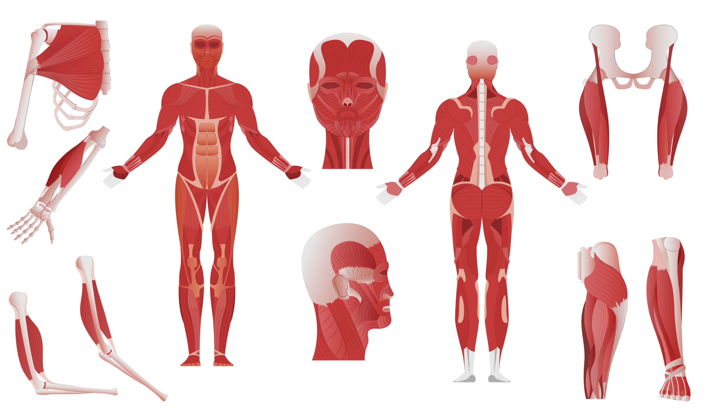

Treeniohjelmat ja menetelmät

Lihaskasvun tiede: Miten kroppa muuttuu?
Lihaskasvu (hypertrofia) ei tapahdu salilla, vaan sen ulkopuolella. Salilla annat lihakselle **mekaanista jännitystä** ja aiheutat mikroskooppisia vaurioita, jotka keho korjaa vahvemmiksi levon aikana.
Toistomäärät ja tavoitteet
- Voima: 1–5 toistoa (raskaat painot, pitkät palautukset 3-5 min).
- Lihasmassa: 6–12 toistoa (keskiraskaat painot, palautukset 1-2 min).
- Kestävyys: 15+ toistoa (kevyet painot, lyhyet palautukset).
Kultainen sääntö: Progressiivinen ylikuormitus
Jos nostat saman painon saman verran kertoja vuodesta toiseen, lihas ei kasva. Sinun on haastettava itsesi joka kerta: lisää 1.25 kg tankoon tai tee yksi toisto enemmän kuin viimeksi. Kirjaa treenit ylös!
Esimerkkiohjelma: 3-jakoinen "Push-Pull-Legs"
Päivä 1: Työntävät (Rinta, Olkapäät, Ojentajat)
Penkkipunnerrus 3x6-8, Pystypunnerrus 3x10, Ojentajapunnerrus taljassa 3x12.
Päivä 2: Vetävät (Selkä, Hauis, Takaolkapäät)
Maastaveto 3x5, Leuanveto 3x max, Kulmasoutu käsipainolla 3x10, Hauiskääntö 3x12.
Päivä 3: Jalat ja Vatsa
Takakyykky 3x8, SJMV (Suorin jaloin maastaveto) 3x10, Reiden ojennus 3x15, Vatsarutistukset 3x20.
Lue lisää tieteellisestä lähestymistavasta UKK-instituutin sivuilta.